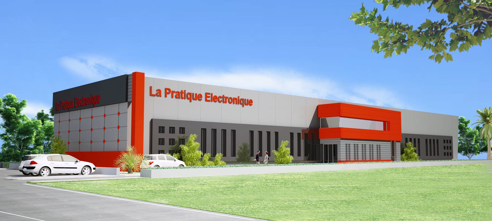
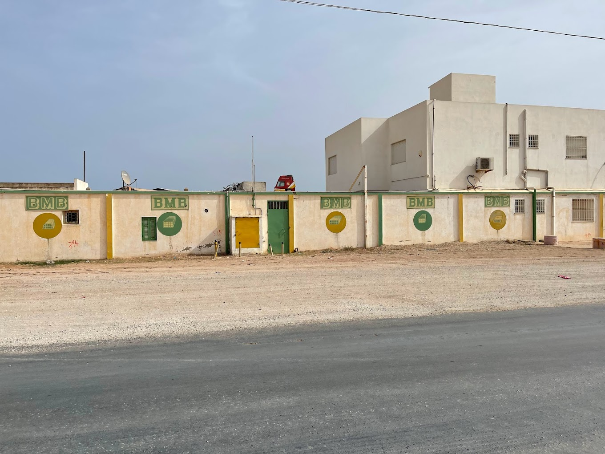

|
Pendant ma licence, j'ai acquis une précieuse expérience professionnelle grâce à mes stages chez les entreprises suivantes:
"LA PRATIQUE ELECTRONIQUE", "HONEYWELL" et "BMB". Mon premier stage (stage initiation) à la PRATIQUE ELECTRONIQUE. Puis mon stage technicienne, à HONEYWELL nabeul Enfin mon stage de fin d'études (PFE) chez BMB. Ces expériences m'ont permis de mettre en pratique les connaissances acquises lors de mes études. |
|  |  | |
| J'ai eu la chance de faire mon premier stage chez LA PRATIQUE ELECTRONIQUE, une societé qui fabrique des cartes électroniques. | Chez HONEYWELL, où j'ai effectué mon deuxième stage de perfactionnement, c'est une entreprise spécialiser dans la production des bavettes. Grâce à cette expérience, j'ai pu acquérir une vision plus large du monde professionnel, ce qui m'a permis de développer mes compétences. | J'ai eu la chance de faire mon stage de fin d'études chez BMB, BRIQUE MODERNE DE BENI KHIAR, Une entreprise spécialisée dans la production de différents types de briques. |